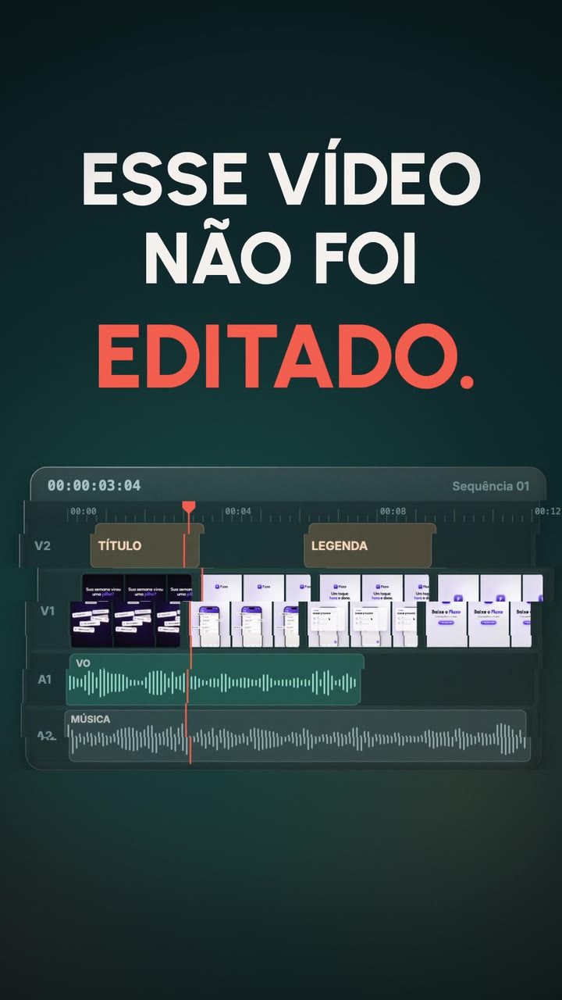
Antes · gancho

Depois · gancho
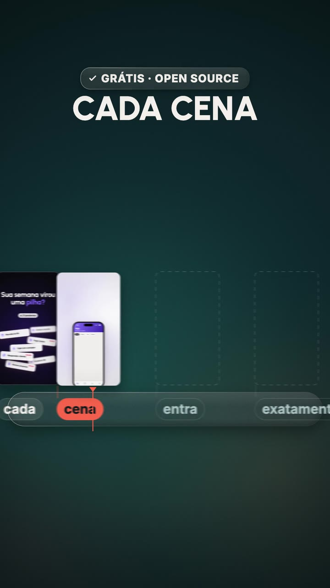
Antes · cena na palavra

Depois · cena na palavra
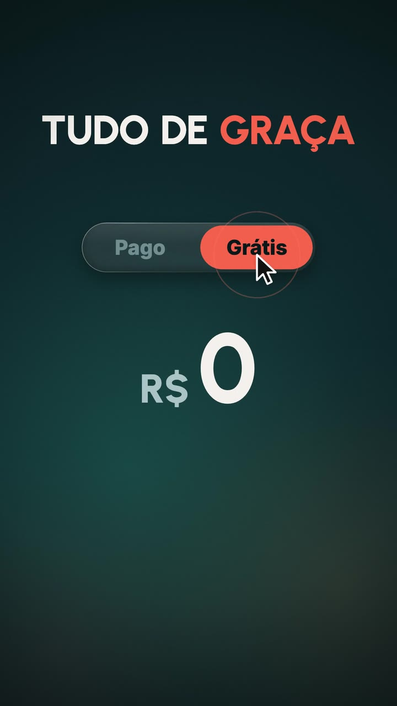
Antes · "de graça"
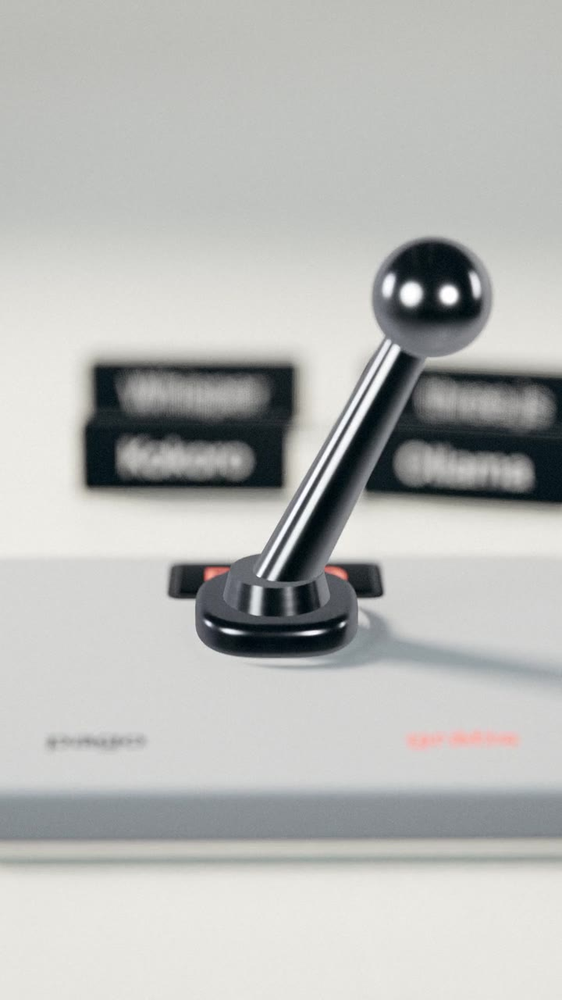
Depois · "custa zero"
Este é o passo a passo para produzir anúncios de vídeo vertical (9:16) a partir de código: você escreve o roteiro, a IA narra, e cada cena entra na palavra falada. A primeira edição ensinava a fazer o vídeo certo. Esta ensina a fazê-lo parecer caro, e a provar isso antes de publicar. Cada etapa tem uma trilha gratuita e uma trilha paga. O kit está em github.com/FilipeMolinariMoura/fabrica-de-criativos.
Ao longo do guia: Dica é atalho, Atenção é erro que custa retrabalho, Por quê explica a regra. Todo número vem marcado como medido ou estimado, e o que deu errado está escrito.
O anúncio do próprio projeto foi feito duas vezes. A primeira passou em todas as conferências e foi reprovada com uma palavra. O que mudou entre as duas é o assunto deste guia.




Com isso, o anúncio 2D fechou com nota 8 em toda a rubrica de quem o construiu. O autor assistiu e disse: cru.
| Medida | Edição 1 | Referências |
|---|---|---|
| Quadro ocupado | 3% a 21% | 60% a 100% |
| Preto mais escuro | 23/255 | 0 a 8/255 |
| Cortes secos em 32 s | 0 | 10 a 40 |
| Câmera e luz | nenhuma | sempre |
Conferência automática prova que o vídeo está correto. Correto ainda pode ser cru. Faltavam ao método um jeito de mirar em "parece caro" e um jeito de impedir que o construtor aprovasse o próprio trabalho. As cinco peças novas são: pesquisa de referências, look-dev, 3D fotorrealista, voz dirigida e crítica independente.
As medidas da edição 1 são contagens sobre 12 quadros. As das referências são leitura visual de miniaturas (capítulo 07).
Cada etapa produz um arquivo que a seguinte consome, e tem um portão de qualidade: uma condição objetiva para seguir. As etapas 2 e 6 são novas, e a 9 mudou de dono.
| # | Etapa | Sai daqui com | Portão de qualidade |
|---|---|---|---|
| 1 | Briefing | briefing.md | Escopo confirmado: o que exatamente está sendo anunciado |
| 2 | Referências | Tabela, regras, análise de lacunas | Cada regra tem número; cada lacuna tem medida |
| 3 | Roteiro | roteiro.json | Texto aprovado antes de gerar a voz |
| 4 | Voz dirigida | Tomadas em voz/<id>/ | Tom e tomada final aprovados de ouvido |
| 5 | Narração no tempo | vo.wav e vo.json | Todas as palavras encontradas, nenhuma frase cortada |
| 6 | Look-dev | 4 quadros e 4 s de movimento | Nota de realismo registrada; quadros aprovados |
| 7 | Filme | film.js | Função pura do tempo; cortes saem de palavras |
| 8 | Som | mix.wav | −14 LUFS, pico ≤ −1 dBTP, música audível nos intervalos |
| 9 | Crítica independente | Correções com números | Tudo ≥ 8, ou a exceção escrita |
| 10 | Render e entrega | MP4 em entrega/finais/ | checar_entrega.sh passa |
Entender errado o escopo. Antes do roteiro, confirme o que está sendo anunciado: um produto específico ou a marca inteira.
Construa um criativo completo, aprove, e só então produza os demais a partir dele.
Tudo o que entra na produção, agrupado pela função. Leia antes de instalar: mostra o papel de cada peça e o que pode ser trocado.
| Ferramenta | Para que serve | Custo |
|---|---|---|
| Orquestração | ||
| Claude Code app ou CLI | O agente que conduz a produção: escreve roteiro e código, roda comandos, olha as folhas de contato e corrige. | CLI grátis · modelo pago ou aberto |
| Ollama + modelo aberto qwen3-coder, gpt-oss | Trilha gratuita: um modelo de pesos abertos na sua máquina, com API compatível. O Claude Code passa a usar esse modelo. | Grátis, local |
| Subagentes | Um agente por criativo depois do piloto, e os críticos independentes (capítulo 14). | Gasta tokens |
| Imagem | ||
Motor 3Dlib/3d · three.js | Câmera de acumulação, estúdio com luz de área, materiais físicos, aparelhos genéricos modelados em código. Novo. | Grátis |
Motor 2Dlib/cena.js | Primitivas de motion em canvas: títulos, vidro, pílulas, cursor, celular, transições. | Grátis |
| motion-reel em vendor/ | Harness do filme como função do tempo; render 2D, efeitos sonoros e mixagem. | Grátis |
| Playwright + ffmpeg | Abre o filme no Chromium, captura quadro a quadro e codifica em H.264. | Grátis |
| HDRI, texturas, fontes | Um HDRI de estúdio, madeira e digitais (CC0); Geist e Instrument Serif (OFL). | Grátis |
| Voz | ||
| ElevenLabs | Voz dirigida: marcações de tom no eleven_v3, idioma forçado, sementes; modo diálogo. | Starter |
| Fish Audio | Modelo gratuito na nuvem (s2.1-pro-free), frase a frase. | Grátis, uso justo |
| Kokoro-82M | Narração local com vozes de português do Brasil. Apache-2.0. | Grátis, local |
| Whisper + Praat | Filtro às cegas: palavra errada e tom no fim da frase. Também marca o tempo de cada palavra. | Grátis, local |
| Som e pesquisa | ||
| uv + Python | Compõe a trilha em código e faz as medições de áudio. | Grátis |
| Miniaturas do YouTube | Leitura de ritmo, quadro e luz de um filme de referência sem baixá-lo. | Grátis |
| Biblioteca de anúncios | Anúncios ativos de uma marca por dias no ar (consultada com o conector AdWhispr). | Opcional |
| Script | Faz |
|---|---|
voz_dirigida.py | ElevenLabs com direção: amostras de tom, bloco com sementes, dialogo, juntar vozes. Novo. |
voz_kokoro.py · voz_fish.mjs · voz_eleven.mjs | Narração gratuita local, gratuita na nuvem e paga em bloco, no mesmo formato de saída. |
voz_por_frase.py · voz_dialogo.py | Vários candidatos por frase com escolha às cegas; montagem em diálogo. |
voz_avaliar.py | O filtro às cegas. Ordena as tomadas e avisa que a nota não mede emoção. |
vo_montar.py | Trata a voz e grava vo.wav e vo.json (palavras e frases no tempo). |
trilha.py | Compõe a trilha sob a narração: tensão, virada na palavra, impacto no CTA. |
finalizar.sh · finalizar3d.sh | Áudio e render de uma vez, no motor 2D e no 3D. O 3D também faz folha de contato e contraste. |
variante.py | Variação de cor, estilo ou voz no motor 2D, sem reescrever o filme. |
checar_entrega.sh · folha_contato.py | Confere o MP4 final; monta a folha de contato de um vídeo. |
O processo é o mesmo nas duas trilhas, com os mesmos scripts e arquivos. Dá para misturar. Vale saber onde está a diferença de verdade.
| Etapa | Trilha gratuita | Trilha paga | Diferença real |
|---|---|---|---|
| Agente | Claude Code com modelo aberto no Ollama (qwen3-coder:30b). Alternativas: OpenCode, Aider | Claude Code com plano Claude | O modelo aberto erra mais em tarefa longa |
| Filme 2D e 3D | lib/cena.js e lib/3d nas duas | Nenhuma | |
| Narração | Kokoro (local) ou Fish Audio (modelo gratuito) | ElevenLabs com direção | A maior |
| Filtro da fala | Whisper e Praat nas duas | Nenhuma | |
| Trilha e efeitos | Sintetizados em código nas duas | Nenhuma | |
| Render | Playwright, Chromium e ffmpeg nas duas | Nenhuma | |
O anúncio do projeto diz "custa zero: os modelos são abertos". Isso vale para o agente, a imagem, a música, os efeitos e o render. A narração que foi ao ar veio da trilha paga: as duas vozes gratuitas foram reprovadas de ouvido para aquele anúncio. Se for pagar uma coisa só, pague a voz.
| Item | Valor | Natureza do dado |
|---|---|---|
| Plano ElevenLabs Starter | US$ 5 por mês, 30 mil créditos | preço pago |
| Uma geração completa do roteiro dirigido | 547 caracteres (1 crédito por caractere no eleven_v3) | contado |
| Todas as tentativas somadas | da ordem de 12 a 15 mil créditos | estimativa pelo saldo |
O gasto foi mais de vinte vezes o de uma geração, porque incluiu as tentativas reprovadas. O processo do capítulo 08 existe para você gastar menos: aprovar o tom em amostras de 10 segundos antes de gerar o roteiro inteiro.
brew install ollama && npm install -g @anthropic-ai/claude-code ollama pull qwen3-coder:30b && ollama serve # deixe rodando export ANTHROPIC_BASE_URL=http://localhost:11434 export ANTHROPIC_AUTH_TOKEN=ollama export ANTHROPIC_API_KEY="" # vazio, senão ele tem prioridade claude --model qwen3-coder:30b
| Memória da máquina | Modelo sugerido | Resultado |
|---|---|---|
| 16 GB | gpt-oss:20b | Funciona, mas é lento e se perde em tarefas longas |
| 32 GB | qwen3-coder:30b | Equilíbrio recomendado |
| 64 GB ou mais | Modelos maiores da família Qwen3 | Mais perto da trilha paga |
Peça uma etapa por vez, citando os arquivos. Comece copiando um exemplo que funciona. Use um agente separado como crítico: a independência importa mais que o tamanho do modelo.
Uma vez por máquina. Depois disso, cada criativo novo é uma pasta.
brew install node ffmpeg uv
uv tool install mlx-whisper # só em Mac com chip M; nos demais: openai-whispergit clone https://github.com/FilipeMolinariMoura/fabrica-de-criativos cd fabrica-de-criativos && make setup
make demo # exemplo 2D: voz gratuita, trilha, mixagem, prévia make contato3d FILME=exemplos/bancada # folha de contato do filme 3D, em segundos
Copie .env.example para .env e preencha ELEVENLABS_API_KEY ou FISH_API_KEY. A chave nunca vai para o chat com o agente nem para o git.
fabrica-de-criativos/ ├─ docs/ # o manual completo, o relatório técnico, as referências ├─ lib/3d/ # motor 3D: câmera, estúdio, modelos, telas, renderizador ├─ lib/cena.js motion.js # motor 2D e harness ├─ scripts/ # voz, filtro, narração, trilha, variações, entrega ├─ exemplos/bancada/ # o anúncio 3D desta edição ├─ exemplos/divulgacao/ # o anúncio 2D da edição 1 ├─ exemplos/demo/ # aplicativo fictício, usado no make demo ├─ templates/ # briefing, roteiro, referências, quadros de estilo, crítica ├─ vendor/motion-reel/ # motor de render e áudio (MIT) └─ ebook/ dist/ # este guia e o PDF um-filme/ # uma pasta por criativo ├─ index.html film.js # o filme: window.seek(t) desenha o quadro t ├─ roteiro.json vo.json # o texto e o tempo de cada palavra ├─ trilha.json beats.json # os tempos da música └─ audio/ # vo.wav, music.wav, sfx.wav, mix.wav (fora do git)
O motor 2D roda em macOS e Linux. O motor 3D só foi testado em macOS com Apple Silicon: o renderizador pede o backend gráfico Metal. Em Linux e Windows, essa opção precisa ser trocada, e isso não foi testado.
node -v, ffmpeg -version e uv --version respondemmake demo gera a préviamake contato3d gera a folha.env fora do gitO roteiro decide a maior parte do resultado. Nenhuma lente e nenhuma voz salvam uma frase mole. Escreva para o ouvido e para o polegar.
Anúncios ativos de ferramentas criativas e de IA, ordenados por dias no ar numa biblioteca pública de anúncios. Dias no ar é indício, e não prova de desempenho: a ferramenta não informa gasto nem resultado.
| Família | Exemplo observado | Dias no ar |
|---|---|---|
| "Você ainda faz do jeito antigo?" | "It's 2026, if you're still manually recording your voiceovers…" | 270 |
| Número concreto | "Cut your editing time from 4 hours to 4 minutes" | 228 |
| "Isto não foi feito do jeito normal" | "Esto no lo estoy grabando yo." | 64 |
| Desafio ao espectador | "Un plan dans cette vidéo n'existe pas. Tu l'as repéré ?" | 56 |
Coleta em 16 nov. 2026. Só o primeiro quadro e o texto de cada anúncio foram vistos.
| Edição 1 | Edição 2 | Por quê |
|---|---|---|
| Esse vídeo não foi editado. Ele foi programado. | igual | Gancho de uma família que dura no ar |
| Sem timeline. | Ninguém abriu um editor. | Jargão e negação abstrata viram uma imagem que dá para filmar |
| Outra cor. Outro estilo. Outra voz. | Quer outra cor? Outro estilo? Outra voz? | Pergunta dá à voz três finais subindo |
| …com o áudio no padrão das redes. | …pronto pra postar. | Especificação vira benefício |
| E dá pra fazer tudo de graça… | E custa zero: os modelos são abertos. | Mais curto, é número, e os dois-pontos criam a pausa |
Feche o roteiro antes de gerar a voz. E se o roteiro afirma algo sobre o próprio vídeo ("foi programado", "custa zero"), o vídeo precisa cumprir.
"Ficou cru" é um veredito. Para virar trabalho, precisa virar medida. Esta etapa transforma "quero que pareça caro" em regras com números, sem baixar nenhum vídeo.
Números de partida para 1080×1920. Vieram de leitura visual de 17 referências e foram ajustados no look-dev.
| # | Regra | Números de partida |
|---|---|---|
| 1 | Encha o quadro | Objeto principal em 55% a 75% da largura; 60% da área trabalhada; o terço de baixo é chão com reflexo |
| 2 | Lente longa | Herói em 85 a 100 mm; macro em 100 a 135 mm; geral no máximo em 50 mm |
| 3 | Um plano nítido só | f/1,8 a f/2,8 em macro, f/4 nos gerais; o foco está na palavra dita |
| 4 | A câmera nunca para, e nunca corre | Empurrão de 2% a 6% ou órbita de 3° a 8° em todo plano; no máximo três movimentos fortes |
| 5 | Luz de estúdio com três papéis | Principal suave, contraluz 1 a 2 stops acima, preenchimento negativo; relação de 4:1 a 8:1 |
| 6 | Matéria tem defeito | Toda aresta com raio; rugosidade variando; digitais no vidro a poucos por cento |
| 7 | Tela é luz e é legível | Inclinada de 8° a 25°; texto a ler com 30 px ou mais; o resto fora de foco de propósito |
| 8 | Tipografia fina | Duas famílias; caixa mista; maiúscula em 3,8% a 4,8% do quadro; até 5 palavras, uma de acento |
| 9 | Uma base, um acento | Acento em até 8% da área; no ato escuro, percentil 5 de luminância ≤ 8/255 |
| 10 | Textura de lente | Grão de 3% a 5%; vinheta de 12% a 18%; bloom baixo e só em emissivos |
| 11 | Montagem com intenção | De 10 a 12 planos em 30 s; quadro 0 pronto; corte 2 quadros antes da palavra; zero fusão |
| 12 | Todo evento visual tem som | Quase silêncio de 150 a 250 ms antes da virada; master em −14 LUFS. Convenção do gênero: as referências não foram ouvidas |
O tratamento é uma frase e uma tabela de planos. A frase deste projeto: o filme se passa num estúdio de produto, sobre uma bancada, e tudo o que o roteiro cita vira objeto físico.
É um lugar para começar a errar com método. No look-dev, f/2,8 no celular deixava uma faixa só de texto legível, e o herói passou para f/4.
A voz foi a parte que mais deu errado. Três narrações passaram na conferência automática e foram reprovadas de ouvido. A que passou não veio de um motor melhor: veio de um processo.
O filtro às cegas (Whisper para as palavras, Praat para o tom no fim da frase) pega palavra errada e afirmação que termina como pergunta. Ele não mede naturalidade nem emoção. Narrações com nota máxima estavam corretas e mortas. A máquina filtra, o ouvido aprova.
| # | Tentativa | No filtro | No ouvido |
|---|---|---|---|
| 1 | Kokoro, gratuito e local, roteiro em bloco | passa | Reprovada. Limpa e neutra |
| 2 | Fish Audio gratuito, frase a frase, duas vozes | passa | Reprovada. Cada frase certa, o conjunto sem fio de emoção |
| 3 | ElevenLabs v3 em modo diálogo, sem direção | passa | Reprovada. Palavras fiéis, entonação errada |
| 4 | ElevenLabs com direção | passa | Aprovada |
uv run scripts/voz_dirigida.py amostras <voice_id> ana --id c01 --roteiros roteiros/roteiros.json
uv run scripts/voz_dirigida.py bloco c01 f1 ana --so-voz f1 --tomadas 5
uv run scripts/voz_avaliar.py voz/<pasta> descarta o que tem erro objetivo.| Ferramenta | Exemplo | Efeito |
|---|---|---|
| Marcação de tom por bloco | [serious] [dramatic] [warmly] [curious] [confident] [excited] [amazed] [short pause] | Só o eleven_v3 obedece. Vale até a próxima marcação |
| Ênfase | Esse vídeo... NÃO foi editado. | Uma palavra em caixa alta por frase |
| Pausa | reticências, dois-pontos | Silêncio antes da palavra que importa |
| Idioma forçado | language_code: "pt" | Reduz a melodia de inglês das vozes padrão |
[serious] Esse vídeo... NÃO foi editado. [dramatic] Ele foi programado. [short pause] Ninguém abriu um editor. Ninguém arrastou um clipe. [warmly] Você escreve o roteiro, a inteligência artificial narra, e cada cena entra exatamente na palavra falada. [curious] Quer outra cor? Outro estilo? Outra voz? [confident] Um comando só! [excited] Sessenta quadros por segundo, pronto pra postar! [amazed] E custa zero: os modelos são abertos!
O roteiro aprovado fica limpo. O texto dirigido é outro campo (falas_dirigidas). O filtro confere contra o limpo. A segunda voz do filme usa o eleven_multilingual_v2, que não entende marcações: ali a direção é só pontuação.
As vozes padrão são americanas. Idioma forçado e direção reduzem a melodia de inglês, sem apagar. O ideal é uma voz brasileira nativa da biblioteca, que exige plano pago e permissão na chave. Não foi o caminho deste anúncio.
A técnica central do método: nada no filme tem segundo fixo. Tudo começa numa palavra.
uv run scripts/vo_montar.py <pasta-do-filme> voz/<id>/<tomada>.wav --tempo 1.10 --pausa-max 0.36
O script trata o áudio, acelera de leve, encurta pausas longas e grava vo.json com cada palavra e cada frase no tempo. No filme:
const tVirada = wt('programado'); // quando a transcrição marca a palavra
const tGolpe = on('programado'); // quando a palavra é OUVIDA (início de energia no áudio)
const corte = wt('ele') - 2 / 60; // o corte vai dois quadros antes da palavraO olho precisa de um instante para ler a imagem nova: corte dois quadros antes. O impacto, esse, vai no início audível da palavra.
O tempo de palavra do Whisper ficou de 50 a 235 ms antes do som, com média perto de 140 ms (medido). Para o que precisa bater, use o início medido no áudio.
Antes de construir 30 segundos, construa quatro quadros. É o lugar mais barato para errar, e responde à pergunta que derrubou a primeira edição: isto parece caro?
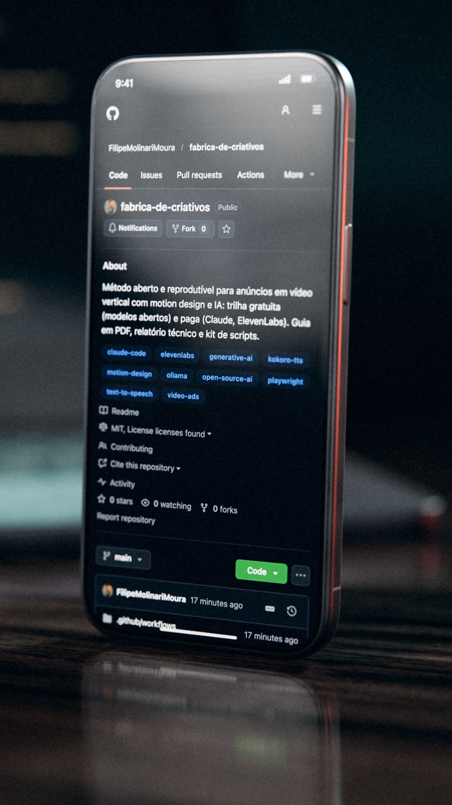
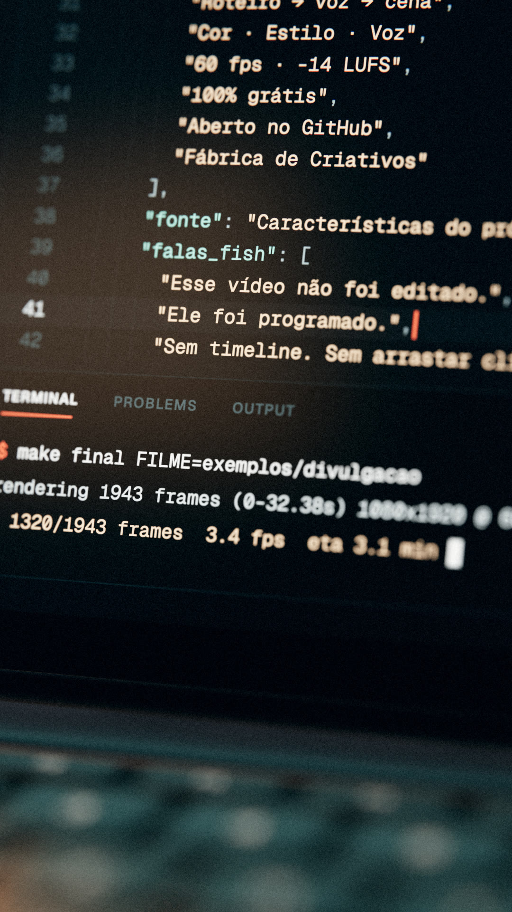
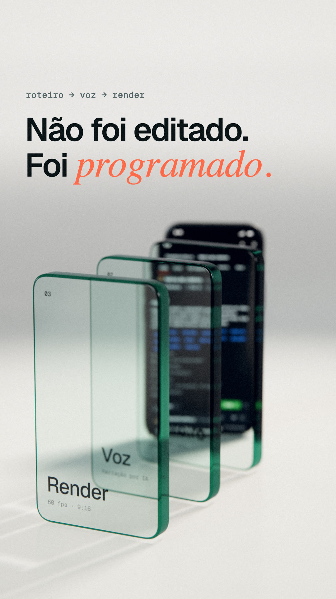
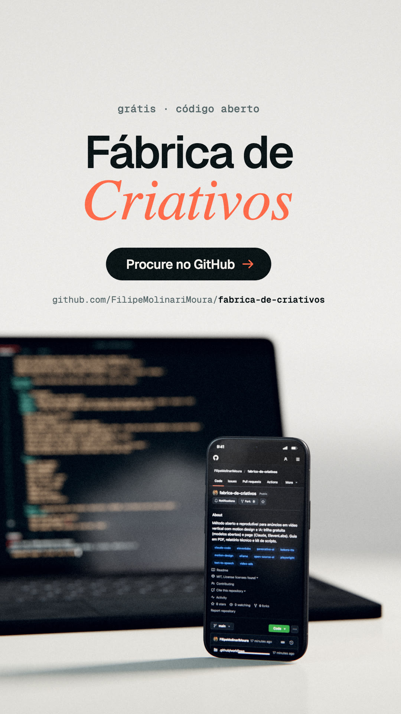
| # | O que | Por que pesa |
|---|---|---|
| 1 | Desfoque de lente por acumulação | Vidro atrás de vidro e reflexo no chão desfocam certo, sem truque |
| 2 | Pretos de verdade | Percentil 5 medido em 6/255 e 4/255. O filme reprovado estava em 23 |
| 3 | Brilho só do ambiente no que é liso | Uma luz que se move imprime um pontinho por amostra num vidro |
| 4 | Um softbox por plano, por cálculo | A faixa de luz no canto da tela é posta onde aquela câmera a vê |
| 5 | Digitais no vidro | Só aparecem onde há reflexo. É o detalhe que mais "vira foto" |
| 6 | Chão com reflexo renderizado | O reflexo endurece perto do contato e se desfaz longe |
| 7 | Bloom só de emissivos | No mundo claro, bloom por limiar faria o fundo inteiro brilhar |
A média foi 7,5, e a conclusão escrita foi: o mundo escuro está mais perto da meta que o claro. Com o filme pronto, os críticos independentes disseram o mesmo, e o realismo do mundo claro foi o único critério a fechar abaixo de 8. O que ainda parece falso: a luz não rebate do chão claro para os objetos, a aresta do vidro é uniforme, os aparelhos são limpos demais.
Não é traçado de raios. É rasterização comum em three.js, repetida muitas vezes por quadro, com uma coisa diferente a cada vez. A soma dá desfoque de lente, desfoque de movimento e sombra suave de verdade.
Uma câmera real não registra um instante nem um ponto: o obturador fica aberto por um tempo, e a luz entra por uma abertura que tem área. A imagem é a média de tudo o que passou. O pipeline (lib/3d/pipeline.js) faz o mesmo: um quadro é a média de 192 a 768 renders completos da cena.
| O que muda a cada amostra | O que se ganha |
|---|---|
| Posição da câmera na abertura da lente, com a projeção cisalhada para o plano de foco não sair do lugar | Profundidade de campo de lente fina, correta atrás de vidro |
| Meio pixel | Antisserrilhado |
| Instante dentro do obturador | Desfoque de movimento: o que gira borra, o que está parado fica nítido |
| Posição de cada luz dentro da sua área | Sombra suave de softbox, com mapa de sombra comum |
| Micro-normal do chão | Reflexo acetinado, que endurece no contato |
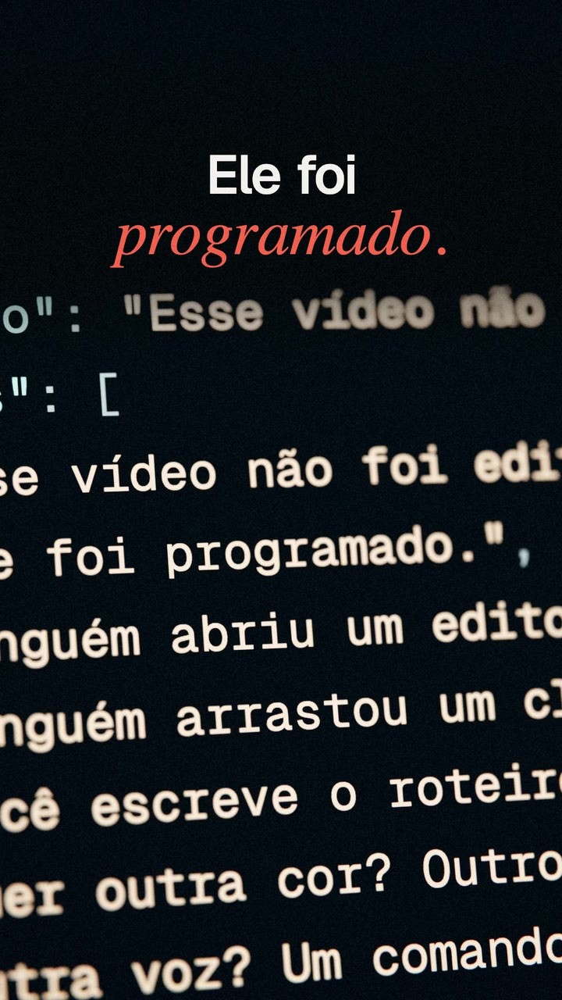
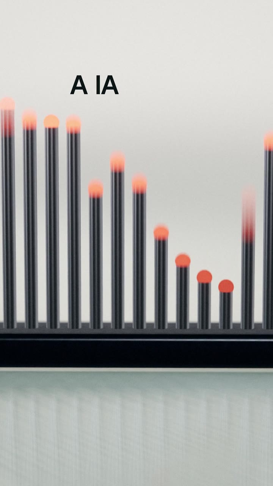

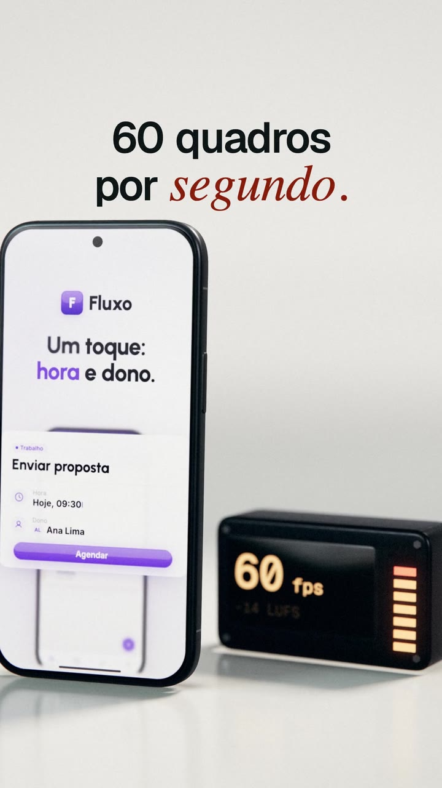
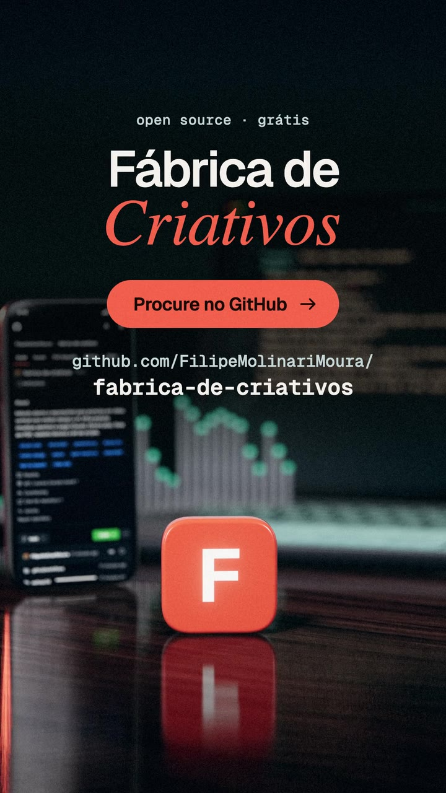
lib/3dconst pipe = new Pipeline(canvas, 1080, 1920);
const S = await createStudio(pipe, '../../lib/3d/assets/');
const stage = { scene: S.scene, camera: S.camera, floor: S.floor, floorUniforms: S.floorUniforms, mirror: S.mirror,
prepare(t) { /* uma vez por quadro: redesenhar as telas */ },
update(t) { /* por amostra: posicionar objetos e devolver a câmera */ return { pos, target, fov, focus, aperture }; },
sample(s) { S.sampleLights(s); } };
window.seek = (t) => pipe.render(stage, t, { spp, fps, typeTex, frame });
vo.jsonUma tabela com o instante de cada palavra que importa e outra com os cortes.make contato3d FILME=exemplos/bancada # folha de contato, 2 quadros por plano make contraste3d FILME=exemplos/bancada # contraste de cada legenda contra o quadro pronto make previa3d FILME=exemplos/bancada # áudio + 30 fps, 128 amostras por quadro make final3d FILME=exemplos/bancada # áudio + 60 fps, 192 amostras por quadro
| Uso | Amostras por quadro | Tempo por quadro |
|---|---|---|
| Folha de contato | 16 a 24 | 0,06 a 0,12 s |
| Prévia em movimento | 128 | cerca de 0,4 s |
| Final | 192 a 256 | 0,6 a 0,9 s |
| Foto de estilo | 768 | 2 a 3 s |
| Plano com vidro maciço | 192 | cerca de 4,5 s |
Medido num Apple M1 Pro com 16 GB. O filme inteiro (35 s, 60 fps, 192 amostras) leva de 35 a 40 minutos; a prévia, perto de 14.
| Sintoma | Causa | Saída |
|---|---|---|
| Clarão na tela e sombras lavadas | Com scene.environment, o three.js ignora envMapIntensity do material | Entregar o mapa em material.envMap, com a dose de cada material |
| Pontinhos brilhantes num vidro | A luz que se move imprime um ponto por amostra | Polidos recebem brilho só do ambiente |
| Vidro atrás de vidro some | A transmissão só enxerga objetos opacos | Renderizar o vidro em camadas, de trás para a frente |
| Objetos flutuando no mundo claro | Fresta clara entre o objeto e a sombra | Sombra de contato por objeto |
| Legenda sobre o assunto | O texto foi encaixado onde sobrou | Uma linha de base para as legendas; o assunto desce |
| Movimento chega antes da hora | A transformação 87% pronta 250 ms antes do golpe | Segurar, e resolver em 2 quadros na palavra |
Sem luz rebatida e sem cáusticas: é o que mais separa o mundo claro de uma fotografia. Refração em espaço de tela. Testado numa máquina, em macOS. Os scripts de logo no After Effects (ae/logo3d/) continuam no kit como opcional e não foram testados nesta edição; o filme novo não depende deles.
O motor 2D (lib/cena.js) desenha num canvas e renderiza em poucos minutos. É o caminho mais curto para anúncios de interface com muitas variações.
| Use o 2D quando | Passe para o 3D quando |
|---|---|
| O argumento de venda é a interface de um aplicativo | O argumento é o objeto, o acabamento, a "cara de produto" |
| Você precisa de dezenas de variações | O filme será comparado a filmes de lançamento |
| O render precisa sair em minutos | Você aceita de 35 a 40 minutos por meio minuto de filme |
| Técnica | Como fazer | Erro comum |
|---|---|---|
| Molas | springU e springKeys: entra com peso, passa um pouco e assenta | Easing linear |
| Título com desfoque | Cada palavra entra de 12 px de desfoque a 0, com 60 ms entre palavras | Desfocar a frase inteira |
| Vidro | Desfoque real do fundo, borda clara, sombra longa e difusa | Sombra curta e escura |
| Pílulas que acendem | Cor da marca no instante em que a fala cita a função | Todas acesas sempre |
| Cursor e toque | Trajetória em arco, anel que se expande, som no toque | Clique sem antecipação |
| Celular | Captura real; zoom em escala logarítmica até a área citada | Tela inventada |
| Transições | A cena nova já está no primeiro quadro do corte | Flash em todo corte |
Os defeitos medidos se corrigem em canvas também: objeto em 55% a 75% da largura; preto de verdade; de 10 a 12 planos com corte na palavra; caixa mista com uma palavra de acento; texto a ler com 30 px ou mais.
Vale para os dois motores. O filme é função pura do tempo. Sem setTimeout, sem Math.random, sem estado entre quadros. Os quadros podem ser pedidos fora de ordem.
Todo som que não é voz sai de código. A edição 2 acrescentou medir: a primeira prévia do filme estava no padrão de loudness e levou nota 5 em desenho de som.
trilha.py compõe a música a partir de quatro tempos da fala: duração, virada, CTA e acentos. O tempo forte cai exatamente na virada.mix.mjs soma voz, música e efeitos, abaixa a música sob a voz e masteriza em −14 LUFS e pico de até −1 dBTP.[T.editor, 'tampa fecha', 'thud', { gain: 0.5 }],
[T.segundo - 0.36, 'giro', 'whoosh', { len: 0.65, from: 400, to: 2800, gain: 0.5 }],
[T.segundo, 'trava', 'click+thud', { gain: 0.45 }],
A música tinha sumido. O sidechain padrão a deixava 14,8 LU abaixo da voz nos intervalos entre as frases.
| Parâmetro | Antes | Depois |
|---|---|---|
| Limiar | 0,02 | 0,08 |
| Razão | 6 | 3 |
| Ataque / soltura | 12 / 280 ms | 15 / 350 ms |
| Ganho da música | 0 dB | +2 dB |
Resultado medido: música 9,0 LU abaixo da voz nos intervalos; voz 14,3 dB acima da música durante a fala; loudness integrado inalterado.
Mais da metade dos efeitos não se ouvia. Cerca de 25 dos 44 eventos estavam de 15 a 27 dB abaixo da voz, e os três mais fortes caíam em cima de palavras.
O filme morria depois da última palavra. O cartão final ficava em silêncio. Agora há um acorde, a música se mantém e o botão pulsa.
make audio3d FILME=exemplos/bancada
Quem construiu sabe o que quis fazer e vê isso na tela, mesmo quando não está lá. Por isso, o construtor nunca aprova o próprio trabalho sozinho.
| Camada | Quem | O que pega |
|---|---|---|
| 1. Rodadas do construtor | O agente que escreve o filme | O grosso: plano ilegível, legenda sobre o objeto, quadro vazio |
| 2. Críticos independentes | Agentes sem o histórico da construção: um de imagem, um de montagem e som | O que o construtor deixou de ver: flutuação, falta de peso, som que sumiu |
| 3. Pessoa | Quem pediu o anúncio | O que nenhuma medição alcança: se a voz emociona, se o filme convence |
| Critério | Prévia 1 (críticos) | Depois das correções |
|---|---|---|
| Realismo | 6 (escuro 7,5 · claro 5) | escuro 8,5 · claro 7,5 |
| Composição · Tipografia | 6 · 6,5 | 8 · 8,5 |
| Acabamento · Consistência | 6 · 5,5 | 8 · 8 |
| Gancho · Ritmo · Movimento | 6,5 · 6,5 · 6 | 8,5 · 8 · 8 |
| Desenho de som | 5 | 8 (nota de construção) |
| História sem som · CTA | 7 · 7,5 | 8,5 · 8 |
Régua: 8 = eu colocaria no ar; 10 = não distingo de um filme de produto de estúdio. As notas da segunda coluna foram registradas pelo construtor depois de aplicar as correções, apoiadas em medições refeitas. Não são uma reavaliação cega.
O realismo do mundo claro fechou em 7,5. O chão ganhou foco de luz, fibra de papel e sombra de contato, mas a luz não rebate do chão para os objetos. A exceção está escrita no registro de crítica do filme, com o motivo. Registrar a recusa e o limite faz parte do método.
A prévia serve para aprovar. O final serve para subir. Entre um e outro, a conferência do arquivo.
| Passo | Motor 2D | Motor 3D |
|---|---|---|
| Prévia, 30 fps | make previa FILME=<pasta> | make previa3d FILME=<pasta> |
| Final, 60 fps | make final FILME=<pasta> | make final3d FILME=<pasta> |
| Conferência | make checar ARQS="entrega/finais/*.mp4" | |
| Item | Valor |
|---|---|
| Resolução e quadros | 1080×1920 (9:16), 60 fps no final e 30 fps na prévia |
| Vídeo | H.264, yuv420p |
| Áudio | AAC, −14 LUFS integrados (±1), pico de até −1 dBTP |
| Eixo | Comando | O que muda |
|---|---|---|
| Cor | python3 scripts/variante.py <filme> escuro --tema escuro | Fundo escuro, mesmo layout |
| Estilo | python3 scripts/variante.py <filme> impacto --estilo impacto | Títulos em itálico pesado |
| Voz | python3 scripts/variante.py <filme> voz2 --voz voz/<id>/<tomada>.wav | Outra narração; cenas e trilha se reposicionam pelas palavras |
No motor 3D, trocar a voz também reposiciona o filme, porque tudo sai do vo.json. Variações de cor e estilo com um comando ainda não existem no 3D.
Skills são pacotes de instruções que o agente carrega quando a tarefa pede. Não dependem do modelo, então funcionam também na trilha gratuita. Nenhuma é obrigatória.
| Etapa | Skill ou plugin | Para quê |
|---|---|---|
| Referências | conector AdWhispr | Anúncios ativos por marca, por dias no ar |
| Roteiro | marketing:content-creation · marketing:brand-review | Variações de gancho; tom de marca e alegações sem fonte |
| Filme | motion-reel (em vendor/) | Render 2D, efeitos, mixagem, folhas de contato |
| Crítica | design:design-critique · design:accessibility-review | Crítica por heurísticas; contraste e legibilidade |
| Escala | workflow-authoring | Um agente por criativo depois do piloto |
Peça por etapa, cite os arquivos e diga onde parar.
Siga docs/09-pesquisa-de-referencias.md. Levante 12 a 15 filmes de lançamento parecidos com o do briefing, sem baixar vídeo. Entregue a tabela, as regras com números e a análise de lacunas do nosso material. Marque o que é medido e o que é estimado. Pare para eu ler.
Roteiro aprovado. Siga docs/12-voz-dirigida.md: gere amostras de tom só do gancho e do CTA, em 5 variações. Não gere o roteiro inteiro antes de eu escolher uma.
Você é crítico e não construiu este filme. Avalie entrega/previas/a01-previa.mp4 com a rubrica de docs/08-qualidade-e-solucao-de-problemas.md. Meça o que puder medir. Devolva notas por critério e uma lista de correções com números. Não elogie.
As regras do método vêm de estudos de animação, aprendizagem, computação gráfica e áudio. Saber o porquê ajuda a decidir quando uma regra pode ceder.
| Fundamento | Fonte | Vira esta regra |
|---|---|---|
| Antecipação, aceleração e assentamento | Thomas; Johnston (1981); Lasseter (1987) | Molas no 2D; recuo, estalo e balanço no 3D |
| Contiguidade temporal | Mayer (2009) | Tudo entra na palavra falada |
| Sinalização e redundância | Mayer (2009) | Na tela vai a palavra-chave, e não a frase |
| Carga cognitiva | Sweller (1988) | Uma ideia por cena |
| Amostragem distribuída | Cook; Porter; Carpenter (1984) | Lente, tempo e luz variam a cada amostra |
| Buffer de acumulação | Haeberli; Akeley (1990) | Um quadro é a média de 192 a 768 renders |
| Reconhecimento robusto de fala | Radford et al. (2023) | Filtro às cegas da narração |
| Análise de entonação | Boersma; Weenink; Jadoul et al. (2018) | Afirmação desce, pergunta sobe |
| Loudness | ITU-R BS.1770-4; EBU R 128 | Master em −14 LUFS e −1 dBTP |
| Contraste de texto | WCAG 2.2 (W3C, 2023) | Legendas com 4,5:1 ou mais, medido |
O repositório traz o manual completo em docs/ (15 capítulos) e um relatório técnico em formato de artigo (docs/relatorio-tecnico.md), com resumo em português e inglês, avaliação, ameaças à validade, limitações e considerações éticas.
make setup && make demo
scripts/novo_criativo.sh a01 "Meu primeiro criativo"
make ajuda # lista todos os atalhos
uv run scripts/voz_kokoro.py <ids|all> pf_dora 3 --rotulo kokoro
node scripts/voz_fish.mjs vozes # vozes em português
uv run scripts/voz_por_frase.py <id> <voice_id> f1 --roteiros <roteiro.json> --n 3
node scripts/eleven.mjs conta # plano e cota
uv run scripts/voz_dirigida.py amostras <voice_id> ana --id c01 --roteiros roteiros/roteiros.json
uv run scripts/voz_dirigida.py bloco c01 f1 ana --so-voz f1 --tomadas 5
uv run scripts/voz_dirigida.py bloco c01 m5 beto --so-voz m5 --modelo eleven_multilingual_v2 \
--estabilidade 0.30 --estilo 0.55 --tomadas 3
uv run scripts/voz_dirigida.py juntar c01-final narracao voz/c01-ana/ana-3.wav voz/c01-beto/beto-1.wav --pausa 0.36
uv run scripts/voz_avaliar.py voz/<id> # filtra; quem aprova é o ouvido
uv run scripts/vo_montar.py <filme> voz/<id>/<tomada>.wav
make previa FILME=<pasta> make final FILME=<pasta> python3 scripts/variante.py <filme> <sufixo> [--tema escuro] [--estilo impacto] [--voz <tomada>]
make contato3d FILME=<pasta> make contraste3d FILME=<pasta> make audio3d FILME=<pasta>
make previa3d FILME=<pasta> make final3d FILME=<pasta>
node lib/3d/render.mjs --film <pasta> --at 2.6,10.5 --spp 256 # quadros avulsos em qualidade alta
make checar ARQS="entrega/finais/*.mp4" # resolução, fps, áudio, −14 LUFS, pico make sintaxe # sintaxe do código (o mesmo da CI) uv run scripts/folha_contato.py <video.mp4> # folha de contato de qualquer vídeo
| Sintoma | Causa | Solução |
|---|---|---|
| Nota máxima no filtro, narração sem vida | O filtro não mede emoção | Volte às amostras de tom e dirija |
| Português com melodia de inglês | Voz padrão americana | Idioma forçado, marcações de tom, ou voz nativa |
| Afirmação termina subindo | A voz "se perde" em frase longa | Quebre a frase, ou gere frase a frase |
| Cenas fora do lugar depois de trocar a voz | Tempos fixos em segundos | Prenda tudo às palavras |
| O impacto chega antes da palavra | A transcrição adianta de 50 a 235 ms | Use o início audível medido no áudio |
| O vídeo acaba antes do cartão final | Mixagem antiga, mais curta que o filme | Refaça a mixagem antes do render |
| A música some sob a voz | Sidechain forte e lento | Limiar 0,08, razão 3, soltura 350 ms, música +2 dB |
| Padrão de pontos no desfoque (3D) | Poucas amostras | 192 ou mais em movimento; 768 em quadro parado |
| Preto leitoso (3D) | Fundo emitindo cinza | Emissão quase nula; confira o percentil 5 |
| Quadros diferentes a cada render | Math.random ou estado entre quadros | Ruído com semente; tudo a partir de t |
| Modelo aberto se perde na tarefa | Contexto curto ou tarefa longa | 32 mil tokens ou mais; uma etapa por vez |
| Claude Code ignora o Ollama | ANTHROPIC_API_KEY definida | Deixe essa variável vazia |
| Item | Custo ou licença | Observação |
|---|---|---|
| Código do kit | MIT | Pode usar em trabalho comercial |
| Este guia e a documentação | CC BY 4.0 | Dê o crédito |
| Trilha gratuita inteira | R$ 0 | O autor estima de 30% a 50% mais tempo de revisão; não é medição |
| ElevenLabs | Starter, US$ 5 por mês | O plano gratuito não permite uso comercial |
| Kokoro-82M | Apache-2.0 | Uso comercial permitido |
| Fish Audio gratuito | Uso justo | Confira os termos antes de veicular |
| HDRI, texturas, fontes do 3D | CC0 e SIL OFL | Poly Haven, ambientCG, Google Fonts |
Material de cliente, áudio, vídeo e chaves não entram em repositório público. Não use vozes que imitam pessoas reais. Siga as políticas de conteúdo gerado por IA da plataforma de anúncios.
BOERSMA, P.; WEENINK, D. Praat: doing phonetics by computer. Amsterdam: University of Amsterdam. Software. Disponível em: https://www.praat.org.
COOK, R. L.; PORTER, T.; CARPENTER, L. Distributed ray tracing. ACM SIGGRAPH Computer Graphics, v. 18, n. 3, p. 137-145, 1984.
EUROPEAN BROADCASTING UNION. EBU R 128: loudness normalisation and permitted maximum level of audio signals. Geneva: EBU, 2020.
HAEBERLI, P.; AKELEY, K. The accumulation buffer: hardware support for high-quality rendering. ACM SIGGRAPH Computer Graphics, v. 24, n. 4, p. 309-318, 1990.
INTERNATIONAL TELECOMMUNICATION UNION. Recommendation ITU-R BS.1770-4: algorithms to measure audio programme loudness and true-peak audio level. Geneva: ITU, 2015.
JADOUL, Y.; THOMPSON, B.; DE BOER, B. Introducing Parselmouth: a Python interface to Praat. Journal of Phonetics, v. 71, p. 1-15, 2018.
LASSETER, J. Principles of traditional animation applied to 3D computer animation. ACM SIGGRAPH Computer Graphics, v. 21, n. 4, p. 35-44, 1987.
MAYER, R. E. Multimedia learning. 2. ed. New York: Cambridge University Press, 2009.
RADFORD, A. et al. Robust speech recognition via large-scale weak supervision. In: INTERNATIONAL CONFERENCE ON MACHINE LEARNING, 40., 2023, Honolulu. Proceedings [...]. PMLR, 2023. v. 202, p. 28492-28518.
SWELLER, J. Cognitive load during problem solving: effects on learning. Cognitive Science, v. 12, n. 2, p. 257-285, 1988.
THOMAS, F.; JOHNSTON, O. The illusion of life: Disney animation. New York: Abbeville Press, 1981.
THREE.JS AUTHORS. three.js documentation. Disponível em: https://threejs.org/docs.
WORLD WIDE WEB CONSORTIUM. Web Content Accessibility Guidelines (WCAG) 2.2. W3C Recommendation, 2023. Disponível em: https://www.w3.org/TR/WCAG22/.
Bibliografia completa, com os filmes e anúncios de referência: docs/referencias.md. Endereços acessados em nov. 2026.